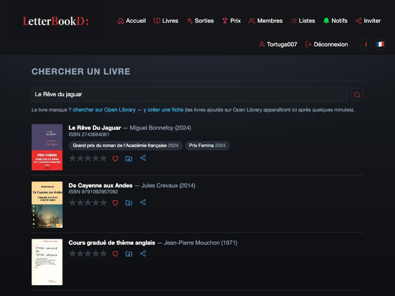

Livres — Rechercher
À quoi ça sert : Trouver un livre dans le catalogue partagé du club. Si le livre n'y est pas, tu peux le proposer via Open Library : il apparaîtra au catalogue quelques minutes après.

Parcours
Tape le début d'un titre, un nom d'auteur ou un ISBN dans la barre de recherche, puis Entrée (ou clique la loupe). Exemple : 'Le Rêve du jaguar' renvoie la fiche Prix Femina/Grand prix du roman de l'Académie française 2024. Si le livre manque, suis le lien 'chercher sur Open Library' puis 'y créer une fiche' : Open Library pousse la fiche dans letterbookd en quelques minutes.
Chaînes d'action
Chaque ligne décrit un déclencheur dans l'interface, ce qu'il ouvre (modal ou formulaire), et l'effet produit.
| Déclencheur | Modal / Champs | Effet |
|---|---|---|
| Barre de recherche | Un champ texte (titre, auteur, ou ISBN). Soumission : Entrée ou clic loupe. | Recharge la page avec les résultats correspondants. L'URL porte le paramètre '?q=…' pour partager la recherche. |
| Lien 'chercher sur Open Library' / 'y créer une fiche' | Formulaire Open Library (hors letterbookd). | Crée une fiche sur Open Library ; letterbookd la récupère dans les minutes qui suivent. Un rafraîchissement de la recherche fera apparaître le nouveau livre. |
| Icône cœur (ligne de résultat) | — | Ajoute/retire le livre de ta liste système 'Favoris'. |
| Icône dossier (ligne de résultat) | Ouvre le modal 'Ajouter à une liste' (voir plus bas). | Ajoute le livre à la liste choisie ou à une nouvelle liste créée à la volée. |
| Icône partage/triangle (ligne de résultat) | Ouvre le modal 'Suggérer ce livre'. | Envoie une suggestion privée à un membre de ton club, avec un message optionnel (280 caractères max). |
| Étoiles grises (ligne de résultat) | Cliquer les étoiles ouvre le formulaire complet de notation sur la fiche du livre. | Redirige vers la fiche livre et attend ta note. |
Modales